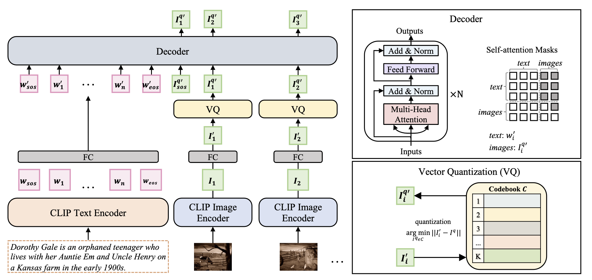
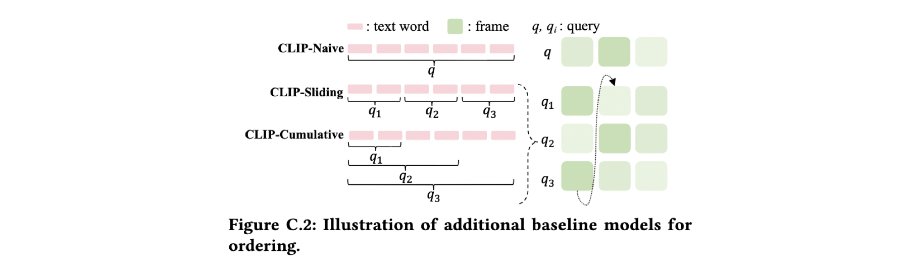
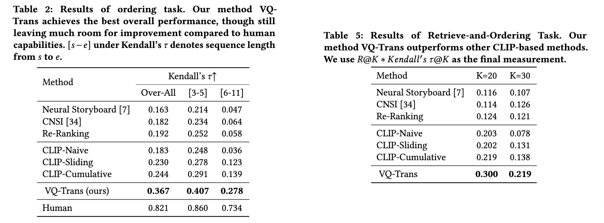

TeViS
Translating Text Synopses to Video Storyboards
Xu Gu 1, Yuchong Sun 1, Feiyue Ni 1, Shizhe Chen 2, Xihua wang 1, Ruihua Song 1, Boyuan Li 1, Xiang Cao 3
1 Renmin University of China, 2 Inria Paris, 3 Bilibili Inc.
Task Definition
What is TeViS Task? 🎬
A storyboard is a roadmap for video creation which consists of shot-by-shot images to visualize key plots in a text synopsis.
Creating video storyboards however remains challenging which not only requires association between high-level texts and images,
but also demands for long-term reasoning to make transitions smooth across shots.
We propose a new task called Text synopsis to Video Storyboard (TeViS),
which aims to retrieve an ordered sequence of images to visualize the text synopsis.
Previous works on text-to-image retrieval can only produce static images without considering the dynamics of shots in the video.
Text-to-video works are able to retrieve or generate videos.
Yet, most of them focus on short-term video clips with only a few seconds as shown in Fig. 1 (a).
The images in these videos are highly redundant and cannot satisfy the requirement of a video storyboard for coherent keyframes.
Previous works on visual storytelling works are proposed to visualize text with a sequence of images,
but they care more about the text-image relevancy while omitting long-term reasoning to make transition smooth across keyframes (see Fig. 1 (b)).
Moreover, the query texts in existing works are visually concrete and descriptive,
making the models less generalizable to more abstract and high-level text synopses such as the synopsis in Fig. 1 (c).
Dataset
What is MovieNet-TeViS Dataset?
In the TeViS task, we aim to retrieve an ordered sequence of
images from large-scale movie database as video
storyboard to visualize an input text synopsis. For this purpose,
we collect the MovieNet-TeViS benchmark based on
the public MovieNet dataset.
Our collected MovieNet-TeViS dataset consists of 10,000 pairs of a synopsis sentence in English and a video storyboard,
i.e., a sequence of keyframes as our final dataset. There are 45,584 keyframes in total.
The number of keyframes in a storyboard ranges from 3 to 11 and about 60\% storyboards consist of 3 or 4 keyframes.
The average number of words in a synopsis sentence is about 24.
Tab. 1 presents the comparison of our dataset and related movie datasets.
It shows that the duration of movie clips corresponding to a description in LSMDC and MAD is only 4 seconds
and the average number of words in a description is only 9-12, which is much lower than ours.
It is impossible to extract a meaningful storyboard from such short clips.
Our MovieNet-TeViS and CMD give a synopsis or summary of 64-second or 132-second video segments respectively.
Thus we can expect the text in CMD is higher-level than that in ours, which is proved by lower avgConcreteness
(Please read our paper for more details).
Compared to CMD, our MovieNet-Tevis uses more words to describe video segments with half the duration of CMD.
This indicates that our text synopses provide more details than those in CMD.
As a start of such a challenging new task,
our dataset is the most appropriate in duration of video clip and semantic level of text.
Two Evaluation Subtasks
We design two evaluation settings for the TeViS task:
1. Ordering the Shuffled Keyframes Subtask:
For a given text synopsis and its shuffled ground-truth images,
how well can the models order them? To measure the long-term reasoning capability of models for ordering,
we let the models order the ground-truth images and apply Kendall' τ to evaluate
how well the ordered list matches with the ground-truth list.
2. Retrieve-and-Ordering Keyframes Subtask:
For a given text synopsis, how well can the models select the relevant images from a large set of candidates
and then order them? This task is more practical in real situations.
For this evaluation, we are given a text synopsis and a large set of candidate images.
The candidate images contain ground-truth images annotated by humans,
and other negative images which are randomly sampled from other images in the corpus.
The number of candidates including ground-truth and negative samples is 500.
We consider both retrieval and ordering performance and apply the product of Recall@K
and Kendall' τ as the final metric of this subtask.
Here the Kendall' τ is calculated upon the returned ground-truth images at top K only.
Baseline Models
To provide a start point for tackling the task, we propose a text-to-image retrieval module based on a pre-trained image-text model, and an encoder-decoder module for ordering images. A coherence-aware pre-training method is further proposed to leverage large-scale movies to improve coherence across frames for the ordering module. The framework of our VQ-Trans model for the TeViS task is shown in the flow Figure.

In addition to the proposed VQ-Trans model, we design three strong baselines based on CLIP for ordering as shown in Fig. C.2:
Experimental Results
Qualitative examples of different models for the ordering task on our Movie-TeViS dataset. The kendall' τ metrics of our approach for Ordering Task and Retrieve-and-Order Task are shown in Tab. 2 and Tab. 5. To learn more details, please refer to our paper..


Nevertheless, there is still a large gap compared to human performance suggesting room for promising future work.
BibTeX
@InProceedings{Gu_2023_TeViS,
author = {Xu Gu, Yuchong Sun, Feiyue Ni, Shizhe Chen, Xihua Wang, Ruihua Song, Boyuan Li, Xiang Cao},
title = {TeViS: Translating Text Synopses to Video Storyboards},
year = {2023},
isbn = {9798400701085},
publisher = {Association for Computing Machinery},
address = {New York, NY, USA},
url = {https://doi.org/10.1145/3581783.3612417},
doi = {10.1145/3581783.3612417},
booktitle = {Proceedings of the 31st ACM International Conference on Multimedia},
pages = {4968–4979},
numpages = {12},
keywords = {movie, datasets, storyboard, synopsis},
location = {Ottawa ON, Canada},
series = {MM '23}
}